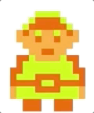

Resources
2019.Aug.22
Knowledge is great! Having access to it is even better.
Over the years I have collected a smathering of articles, websites, online toolkits that I have found useful in my personal practice. I only chose to share a few here (mostly due to laziness, so if there is anything you are searching for and cannot find, I am always happy to lend a hand.
A note on the list: with any heirarchical classification you will find that some entries should be in multiple categories, but I have deliberately chosen to keep them to one.
| Design | ||
| Startups, this is how design works | Great intro to the multitude of design that exists in the world. Really designed to convince non-believers about the magical value of design. |  |
| Method of Action | Fun games to help you learn design fundamentals like kerning, drawing with Illustrator's pen too, design shapes and colors. | |
| ColorBrewer | What resource guide would this be without ColorBrewer? If you are doing ANYTHING with multiple colors on the web, use this tool. It is enables you to pick color schemes that map appropriately to your data and test for color blindness. Your birthday came early this year. |  |
| Awesome Design Tools | A catalogue of every tool on the web that will can help you in your design and development process. | |
| Programming | ||
| Great Reads | ||
| Data Visualization | ||
| Language + Color | A scrollytelling story that walks you through the way language shapes the way we perceive and interact with color. | |
| The Spiral of Human Knowledge | This is probably the craziest thing I have ever seen. It ambitiously maps the connections of a private school's curriculum, linking themes throughout history and curricular topic. | |
| Other | ||
| Peter Brown Books | Peter Brown is a children's storybook author. Read his blog. His capacity to storytell is not only captivating to children, but also adults. | |
| HAWRAF | A design studio that creates interactive technology as marketing campaigns for clients. Unique, fresh, very hip. | |
| Datawheel | This org makes datavisualizations as websites. Check out Observatory of Economic Complexity. |